Neste sesong
Season 1
| 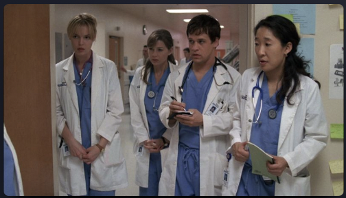 | 1. A hard day`s night (44m) |
| 2. The First Cut is the Deepest (44m) | |
| 3. Winning a Battle, Loosing the war (44m) | |
| 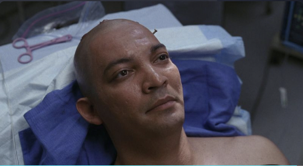 | 4. No Man`s Land (44m) |
| 5. Shake Tour Groove Thing (44m) | |
| 6. If Tomorrow Never Comes (44m) | |
| 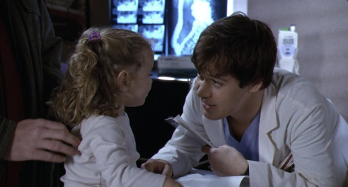 | 7. The Self-Destruct Button (44m) |
| 8. Save me (44m) | |
| 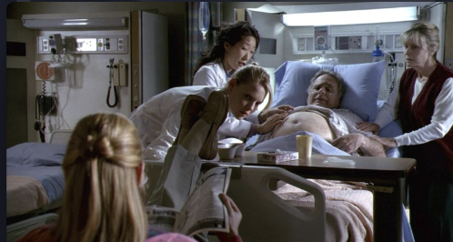 | 9. Who`s Zoomin Who? (44m) |
Season 2
| 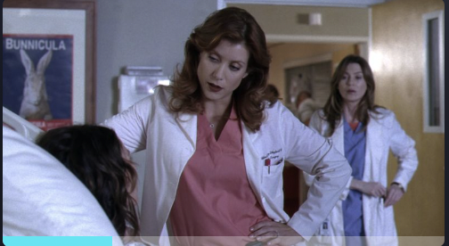 | 1. Raindrops Keep Falling on my Head (44m) |
| 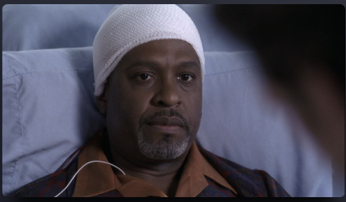 | 2.Enough is Enough (No More Tears) (44m) |
| 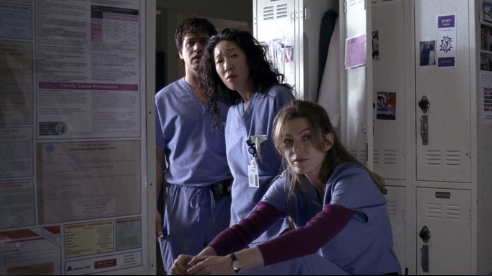 | 3. Make Me Lose Control (44m) |
| 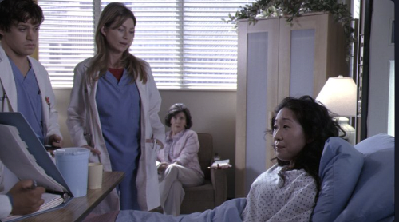 | 4. Deny, Deny, Deny (44m) |
| 5. Bring the Pain (44m) | |
| 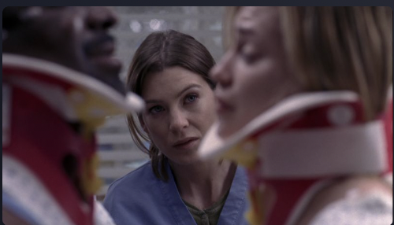 | 6. Into You Like a Train (44m) |
| 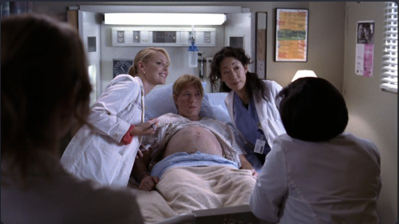 | 7. Something to Talk About (44m) |
| 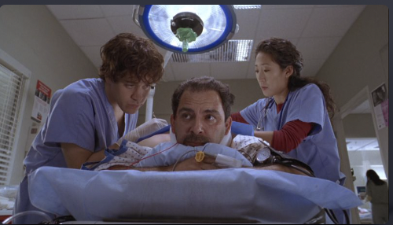 | 8. Let It Be (44m) |
| 9. Thanks for the Memories (44m) | |
| 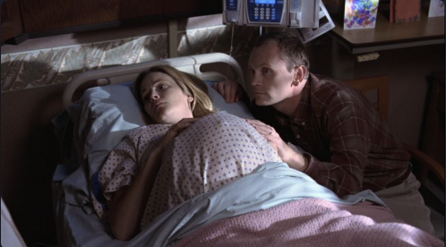 | 10. Much Too Much (44m) |
- Sesong 1-18
- Seson 1
- Sesong 2
- Sesong 3
- Spilles nå inn sesomg 19